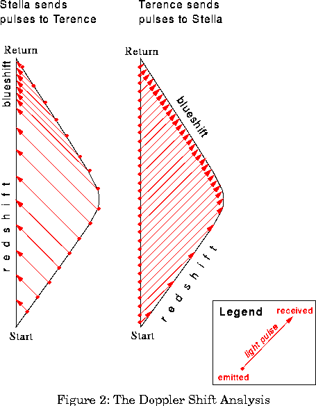
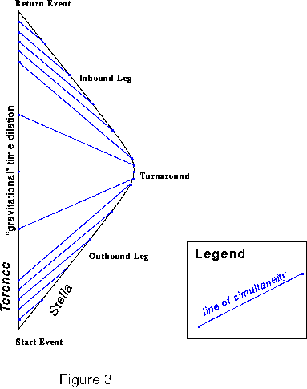
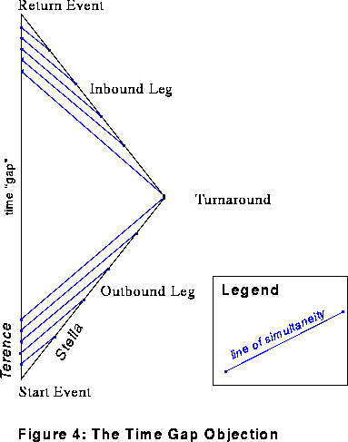

An old lawyer joke:
"Your Honor, I will show first, that my client never borrowed the Ming vase from the plaintiff; second, that he returned the vase in perfect condition; and third, that the crack was already present when he borrowed it."Or to quote Shakespeare: "Methinks the lady doth protest too much."
Why so many different analyses? Are the relativists just trying to bamboozle their opponents, like the defence attorney who just has to stir up doubt about the plaintiff's case without giving his own theory of events? Not at all; the physical theory should and does tell a single coherent story here.
Relativity pays the price of permissiveness. It says to us, "Pick whichever frame you like to describe your results. They're all equivalent." No wonder that one analysis ends up looking like three or four.
Most physicists feel that the Spacetime Diagram Analysis is the most fundamental. It does amount to a sort of "Universal Interlingua", enabling one to see how superficially different analyses are really at heart the same.
Figure 1 is the basic spacetime diagram for our hero and heroine. By adding lines one way or another, we will get all the various analyses. (Oh yes: choose units so that c=1 throughout. So light rays plot as 45 degree diagonal lines in all of our diagrams.)

The time dilation factor in the diagram is two: Terence ages twice as much as Stella. (Notice that Stella has time to send off a mere 16 pulses, while Terence fires off 32.) The emissions are spaced evenly from the viewpoint of the respective senders; not so the receptions, which are redshifted or blueshifted according to the relative motion of sender and receiver. All pulses are properly accounted for; check out the Doppler Shift Analysis for full details.
Figure 3, the diagram for the Equivalence Principle Analysis, adds lines of simultaneity (in blue) instead of light pulses.

Modify Figure 3 slightly, and we have a portrayal of the Time Gap Objection (Figure 4).

These are just a few of the ways we can decorate our simple diagram with extra lines. In the laissez-faire spirit of General Relativity, we could cover the diagram with almost any network of grid lines, and base a description on the resulting coordinate system. (I hasten to add that there are some pitfalls for the unwary: see Section 6.3 of Misner, Thorne, and Wheeler for the fine points.)